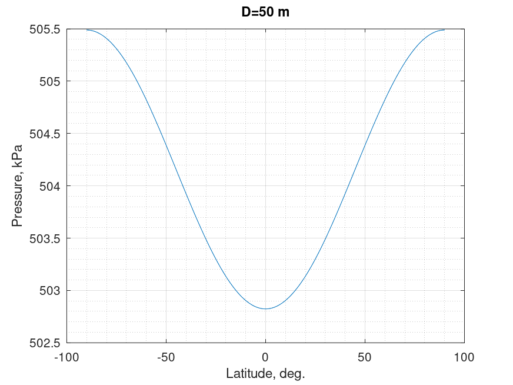

Depth to pressure conversion. Leroy '97 equation
Mathematical definition
$$\boxed{P\left( {Z,\phi } \right) = P\left( {Z,45} \right) \times k\left( {Z,\phi } \right)}$$
This is an equation for the "standard" ocean. Use corrective terms from the table above for particular applications.
| Notation | Description | Units | Limits | Conversion |
|---|---|---|---|---|
| $P$ | pressure | $\text{kPa}$ | $=P \left[\text{MPa}\right] \times 10^{3}$ | |
| $Z$ | depth | $\text{m}$ | ||
| $\phi$ | latitude | $\text{deg.}$ | $-90\ < \phi < 90$ |
$$\begin{array}{r} {P\left( {Z,45} \right) = 1.00818 \times {{10}^{ - 2}}Z + 2.465 \times {{10}^{ - 8}}{Z^2}}\\ { - 1.25 \times {{10}^{ - 13}}{Z^3} + 2.8 \times {{10}^{ - 19}}{Z^4}} \end{array}$$
$$k\left( {Z,\phi } \right) = \frac{{g\left( \phi \right) - 2 \times {{10}^{ - 5}}Z}}{{9.80612 - 2 \times {{10}^{ - 5}}Z}}$$
$$g\left( \phi \right) = 0.7803\left( {1 + 5.3 \times {{10}^{ - 3}}{{\sin }^2}\left( \phi \right)} \right)$$
| Notation | Description | Units |
|---|---|---|
| $g\left( \phi \right)$ | gravity | $\text{ms}^{-2}$ |
Corrective terms for various areas
$${P_{corrected}} = P\left( {Z,\phi } \right) - \Delta P\left( Z \right)$$
| Area of applicability | Latitude | Expression for $\Delta P\left( Z \right)$, $\text{MPa}$ | Accuracy $\pm 10^{3}$, $\text{Pa}$ |
|---|---|---|---|
| Common oceans | $60^\circ N - 40^\circ S$ | $1.0 \times {10^{ - 2}}Z/\left( {Z + 100} \right) + 6.2 \times {10^{ - 6}}Z$ | $8$ |
| North Eastern Atlantic | $30^\circ N - 35^\circ S$ | $8.0 \times {10^{ - 3}}Z/\left( {Z + 200} \right) + 4.0 \times {10^{ - 6}}Z$ | $3$ |
| Circumpolar Antarctic | $8.0 \times {10^{ - 3}}Z/\left( {Z + 1000} \right) + 1.6 \times {10^{ - 6}}Z$ | $1$ | |
| Mediterranean Sea | $- 8.5 \times {10^{ - 6}}Z + 1.4 \times {10^{ - 9}}{Z^2}$ | $2$ | |
| Red Sea | $0$ | $2$ | |
| Arctic Ocean | $0$ | $1$ | |
| Sea of Japan | $7.8 \times {10^{ - 6}}Z$ | $1$ | |
| Sulu Sea | $8^\circ$ | $1.0 \times {10^{ - 2}}Z/\left( {Z + 100} \right) + 1.6 \times {10^{ - 5}}Z + 1.0 \times {10^{ - 9}}{Z^2}$ | $<1$ |
| Halmahera basin | $0^\circ$ | $8 \times {10^{ - 3}}Z/\left( {Z + 50} \right) + 1.3 \times {10^{ - 5}}Z$ | $<1$ |
| Celebes basin | $4^\circ$ | $1.2 \times {10^{ - 2}}Z/\left( {Z + 100} \right) + 7.0 \times {10^{ - 6}}Z + 2.5 \times {10^{ - 10}}{Z^2}$ | $2$ |
| Weber Deep | $6^\circ$ | $1.2 \times {10^{ - 2}}Z/\left( {Z + 100} \right) + 7.0 \times {10^{ - 6}}Z + 2.5 \times {10^{ - 10}}{Z^2}$ | $2$ |
| Black Sea | $43^\circ$ | $1.13 \times {10^{ - 4}}Z$ | $1$ |
| Baltic Sea | $60^\circ$ | $1.8 \times {10^{ - 4}}Z$ | $1$ |
Octave/Matlab implementation
function P = depth_to_pressure_sea_leroy_97(D,L)
% Inputs
% D: depth \ m \ 0 < D < 4000
% L: latitude \ degree \ -90 < L < 90
% Outputs
% P: pressure \ kPa
G = 9.7803*(1 + (5.3e-3)*sind(L).^2);
P45 = (1.00818e-2)*D + (2.465e-8)*(D.^2) ...
- (1.25e-13)*(D.^3) + (2.8e-19) *(D.^4);
k = (G - (2e-5)*D)./(9.80612 - (2e-5)*D);
P = P45.*k.*1e3;
end
Computational examples

References
- Leroy, Claude C; Parthiot, François, "Depth-pressure relationships in the oceans and seas", 1998